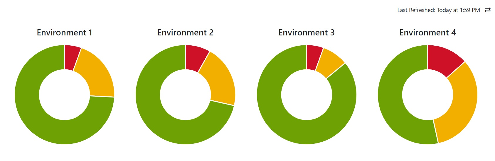
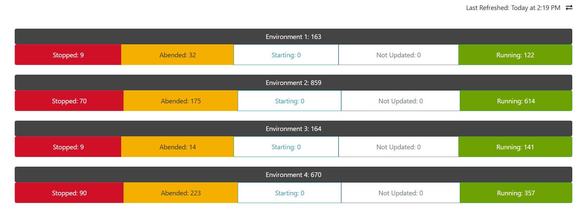
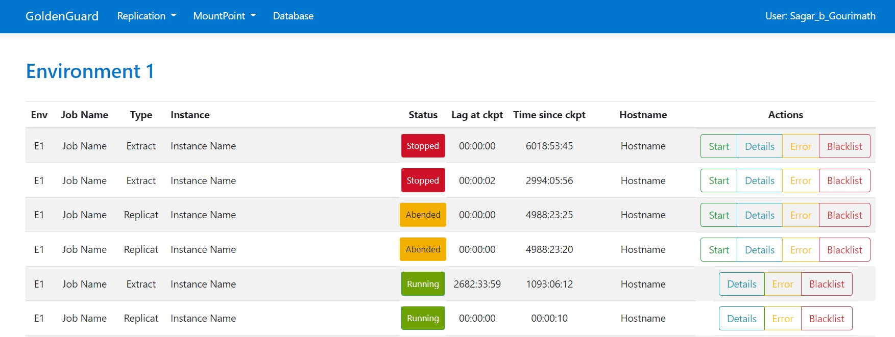

DB Replication Monitoring GoldenGuard
To monitor Oracle GoldenGate

To monitor Oracle GoldenGate
The tool was built with an intention of being able to monitor GoldenGate Replication Processes. We also have an option to monitor mount points and database statuses.
Console applications scheduled using Windows Task Scheduler to fetch statuses at regular intervals, and save into SQL Server database.
This is then rendered onto the UI in the form of charts.
The dashboard provides an overview of the current status of replication processes. There is also an option to change the view based on user preference. This was achieved by using local storage to save the user's preference, and render the view based on that value.
On clicking the environment that you need more details of, you'd be redirected to a new page with the process details as shown in the below screen capture. An option to perform various actions would be shown once the system confirms that the user is authorized, Windows Authentication used to achieve this.
The tool is also integrated with ServiceNow. A service checks for processes that are down at regular intervals, and after 3 bad samples, makes an API call to SNow which inturn creates an incident that is routed to the team. Once a given process comes back up, a clear event is sent to SNow that closes the related alert.